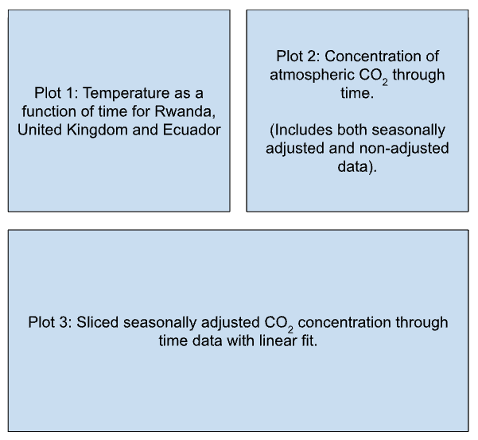

Computing Skills Assessment#
Overview#
This week you will be putting into practise the computing skills we have been developing over the past five weeks.
You are encouraged to review the materials and exercises used throughout the semester and ask for support from the academic staff and GTA’s during the first hour of the session. Please also use this time to review the assessment rubric and ask any questions about today’s task.
During the second hour of the session, you will begin to work through the assessment. You are encouraged to try and solve the problems to the best of your ability using any resources available independently initially, but you may share ideas with your peers during this time.
During the final hour of the session, GTA’s and academic staff will be present to support you by offering advice and suggestions of how to complete the task at hand. At the end of the session, please upload your completed work to the shared folder on CoCalc. This work will be assessed and you will receive feedback on your submission.
As this is an assessment of your computing skills, we kindly request that you limit your use of AI to debugging code and understanding error messages.
Revision#
Please spend some time reviewing the topics that we have covered thus far during the skills workshops and ensure that you are comfortable with each one. If you identify something that seems unfamiliar or that you feel is an area for development, take note of it, review the materials provided, and ask for support if needed.
A table summarising what we have covered thus far during the semester is provided in the Google Doc “Computing Skills: Revision & Assessment”. Please use this.
Assessment Task#
In this task you will be given the opportunity to showcase the computing skills that you have developed over the course of the past five weeks. In this task you will:
Import data from CSV files into Python.
Define and use a function.
Create several subplots, each of which contains multiple data sets.
Slice a set of data into a subset of data.
Perform a linear regression on the subset of data.
Extrapolate and make predictions based on the results of the linear regression.
Two CSV files are provided for this task. The file named “CountryTemperatures.csv” contains information about the average monthly temperature (and the associated error) for five different countries.
The file named “CO2Measurements.csv” contains a set of measurements known as the “Keeling Curve”, this being the longest series of continuous measurements of the concentration of CO2 in our atmosphere, which were recorded at the Mauna Loa Observatory, Hawaii. As the level of carbon dioxide in the atmosphere changes with the seasons, the file contains base measurements and seasonally adjusted measurements.
Dates can be awkward to deal with in Python, so instead of the year, month and day being recorded, decimal dates are used in both datasets. These provide a purely numeric format for dates; the number before the decimal point represents the year, and the number after the decimal point represents the fraction of the year that has elapsed. For example, if a measurement was recorded on September 1st (three quarters through the year), 1989, the decimal date would be 1989.75.
You task is as follows:
Import the data from the CSV files into a Python script.
Create a figure containing three subplots arranged across two rows. The first row should contain two of the plots, and the second row should have only one plot (see template below).

On the first subplot, plot the average temperatures of the three countries (Rwanda, Ecuador and the United Kingdom) as a function of time between January 1st 2004 (list index = 1356) and December 1st 2009 (list index = 1428).
On the second subplot, plot the concentration of atmospheric CO2 as a function of time (both for the seasonally unadjusted and adjusted data).
On the third subplot, plot a subsection of the seasonally adjusted CO2 concentration measurements that span a range between the first measurement of 2004 (list index = 545) to the last measurement of 2012 to (list index = 653). Perform a simple linear regression using this data and superimpose it onto the plot.
Write a series of print statements that output the fit results (gradient and intercept with errors and r-value).
Using the values of the gradient and intercept from the line of best fit as arguments, define a function that predicts the concentration of CO2 for a given year, prints the results, and returns the value as a variable. What is the predicted concentration of CO2 for the year 2050?
Tips#
To enhance your plots, you may wish to set what numbers appear on your axes (these are known as ticks: plt.xticks or axes.set_xticks and plt.yticks or axes.set_yticks), change the minimum or maximum values that your plot spans (use plt.xlim or plt.set_xlim and plt.ylim or plt.set_ylim), change the position/style of your legend, and change the size of your figure using plt.figure.
These are just a few of the additional tools you may wish to use to great clear and effective plots for data visualisation, but there are many more that you can use.
import matplotlib.pyplot as plt
import numpy as np
from scipy.stats import linregress
# Import the data from the csv files.
# Recall the features of a high quality plot.
# Create subplots and plot data for plots 1 and 2.
# Fit the data and make plot 3.
# Define and call your function